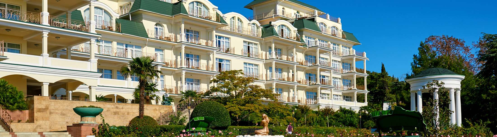

О нас
У Palmira Palace – богатая история. Отель расположен в курортном посёлке Курпаты. Имение «Курпаты» стало последним приобретением царской семьи на Южном берегу Крыма.
Отель предлагает широкий спектр SPA-услуг (более 500 процедур со всего мира) и уникальные программы восстановления здоровья круглый год для полноценного отдыха и оздоровления. К услугам гостей: уютные видовые номера на первой береговой линии, изысканные рестораны, крытый и открытые подогреваемые бассейны, живописная парная, русская баня, хаммам, аквапарк, анимация для взрослых и детей, детский клуб, фитнес-центр, оборудованный пляж и набережная для прогулок. Погрузитесь в пространство отдыха и восстановления на фоне живописных природных декораций Крымского полуострова, бескрайнего ласкового Чёрного моря и гор, дающих силу и энергию.